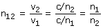

Índice de refracción relativo El índice de refracción (Absoluto) de un medio es el cociente de la velocidad de la luz en el vacío entre la velocidad de la luz en dicho medio n = c/v Este índice es siempre mayor que uno El indice de refracción de un medio (1) con respecto a otro medio (2) es el cociente de la velocidad de la luz en el medio (2) entre la velocidad de la luz en el medio (1):  El índice relativo del medio 1 respecto al medio 2 es el cociente de los índices absolutos de los medios 1 y 2 (Por este orden) |